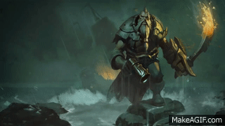

WELCOME TO Bilgewater

“I was cutting throats and sinking Noxian war galleys when you were still pissing your britches, boy.
You don’t want to take me on.”
Blood in the water
The massive Noxian war captain shuddered and dropped his axe as Gangplank rammed his cutlass deep into the man’s gut. Blood bubbled from the warrior’s tattooed lips as he mouthed an unheard curse.
Gangplank pulled his blade free with a sneer and shoved the dying man to the deck. He collapsed in a clatter of heavy armor, his blood mingling with the seawater sloshing across the war galley’s foredeck. The black-painted hull of Gangplank’s ship loomed above, the two vessels locked together with boarding grapples and lines.
Gangplank’s black and gold teeth gritted in suppressed pain – the Noxian had almost bested him. Nevertheless, he refused to let his crew see his weakness, forcing his lips into a wicked smile.
Wind and rain whipping at him, he turned to survey the rest of the Noxians. He’d issued a blood-challenge to the enemy captain, and now that he’d won, their will to fight evaporated.
“This ship is now mine,” Gangplank roared, loud enough to be heard over the driving gale. “Does anyone else have anything to say on the matter?”
One of the Noxians, a huge warrior with blood-cult tattoos upon his face and garbed in spiked armor glared at Gangplank.
“We are sons of Noxus,” he bellowed. “We would all gladly die before we let our ship be taken by the likes of you!”
Gangplank frowned, then shrugged.
“Fair enough,” he said, and turned away.
Gangplank favored his crew with a vicious smile.
“Kill them all,” he roared. “And burn their ship to the waterline!”
.png)